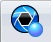
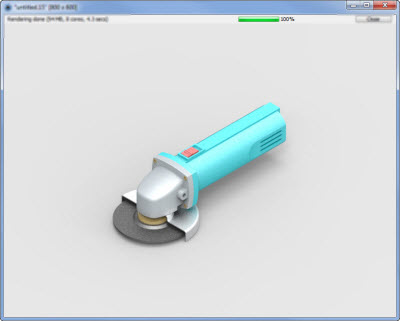

Render the current view with KeyShot
Use the KeyShot Render

command to start KeyShot, populate it with the currently active document in Solid Edge, and automatically start the rendering process.-
Choose Tools tab→KeyShot group→ KeyShot Render .
The KeyShot application window starts and the model is rendered.
Note:To locate the KeyShot Render command, type KeyShot Render into Command Finder
 .
. -
After KeyShot opens the document, the rendering process beginsautomatically. Select the Render command and change the following settings as needed.
-
Output
Contains boxes to define the file name, folder location, format, resolution, and more.
-
Quality
Contains sliders for different parameters such as Samples, Ray Bounces, Anti-aliasing, and Shadows.
-
Network
Lists the machines available for remote processing.
Note:You must have the KeyShot Networking Rendering package.
-
-
Select the Render button.
The rendering processes in a new window.
Example:The window contains the name of the file and some details about the rendering process.

Note:This application uses CPU processing to generate a high quality image.
-
Use the KeyShot Update command
 to update the image after a modeling change in the active Solid Edge session.
to update the image after a modeling change in the active Solid Edge session.
Solid Edge supports KeyShot 5 or later. If you have an earlier version or do not have KeyShot installed, Solid Edge automatically installs it for you.